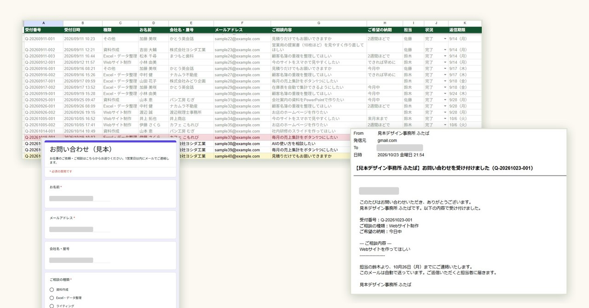
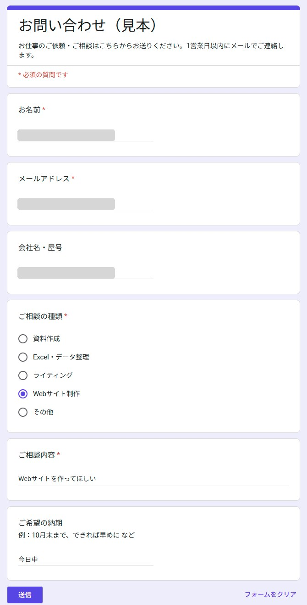
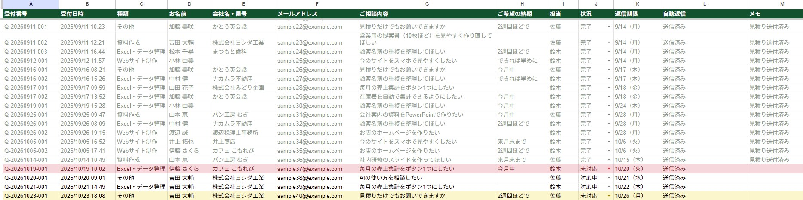
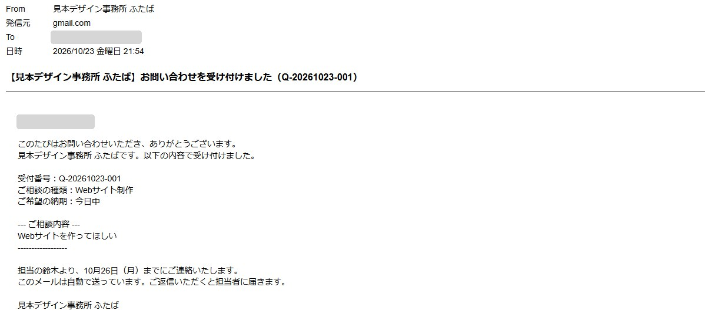
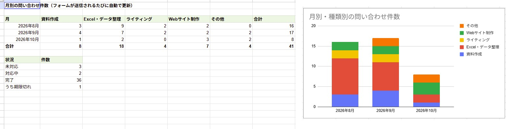
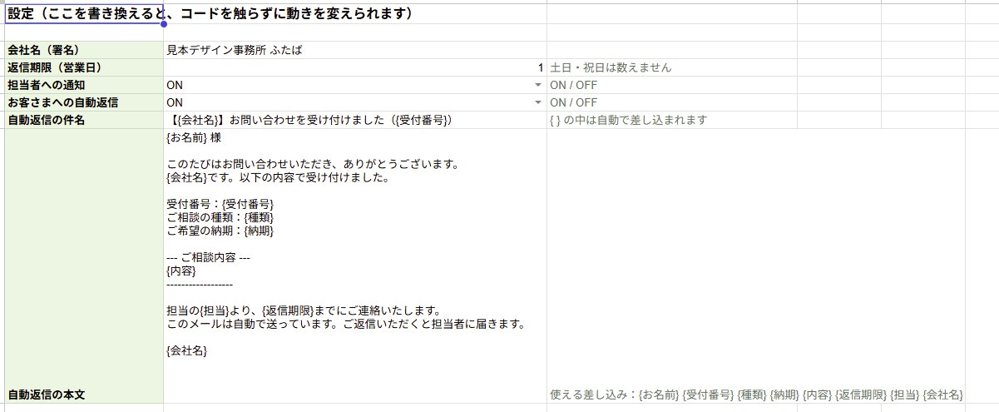

← 制作実績一覧へ戻る
見本（実際に動く仕組み）
GAS：問い合わせフォームの自動処理
問い合わせが届いたら、受付番号をつけて一覧に整理し、担当者に知らせ、お客さまに自動で返信。返し忘れと「手で写す作業」をなくす仕組みです。

想定した依頼
「ホームページの問い合わせフォームの回答を、毎回手で表に写している。返信メールも1通ずつ手で書いていて、返し忘れも起きる。月に何件来ているかも数えていない」。小さなデザイン事務所からのご相談を想定して作りました。
作ったもの
Googleのサービスだけで動く仕組みです（無料・サーバー不要）。コードを貼って1回実行するだけで、フォームと管理用のスプレッドシートが自動でできあがります。問い合わせが送られると、次の7つを自動で行います。
- 受付番号をつける（Q-20261023-001 のように日付ごとの連番）
- 「問い合わせ一覧」に1行で整理する
- 相談の種類ごとに担当者を決める
- 担当者に通知メールを送る
- お客さまに受付番号つきの自動返信を送る
- 同じ内容の二重送信やメールアドレスの打ち間違いは、返信せずに一覧へ理由を残す
- 月別・種類別の件数表とグラフを更新する
さらに毎朝9時に、返信期限を過ぎた「未対応」の問い合わせを担当者ごとにまとめて知らせます。





工夫した点
- 返し忘れを仕組みで防ぐ：返信期限は土日と祝日を飛ばして自動で計算します。金曜の夜に届いた問い合わせは月曜が期限になり、過ぎたら一覧が赤くなり、翌朝メールでも知らせます。
- コードを触らずに変えられる：自動返信の文面、担当者、返信期限の日数、通知のオン・オフは「設定」シートで書き換えるだけ。納品後もお客さま自身で調整できます。
- まちがった返信を送らない：同じ内容が続けて届いたときや、メールアドレスの形がおかしいときは自動返信を止め、理由を一覧に残します。
規模と制作時間
- コード1ファイル、シート4枚（問い合わせ一覧／月別集計／設定／フォームの回答）、自動で動くきっかけ2つ（フォーム送信時・毎朝9時）
- 制作：設計からコード、動作テストまで 約10分（AIと一緒に作成）。そのあと実際のGoogleアカウントでフォームを送り、メールの届き方と表の見た目を確かめて整えました
こんなご依頼にも対応できます
- Googleフォームの回答を、自動で表に整理したい・メールで知らせてほしい
- 申込みや予約の受付に、自動返信メールをつけたい
- スプレッドシートの集計やメール送信を、GASで自動にしたい
注意
画面に出てくる会社名・お名前・メールアドレス・問い合わせの内容は、見本として作った架空のものです。メールは使う人のGoogleアカウントから送られます（無料のアカウントは1日100通まで）。